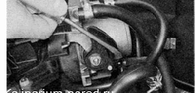

Трос привода дроссельной заслонки - заменаТрос привода дроссельной заслонки заменяют, если он заедает в оболочке или поврежден.
Приступать к выполнению работы следует только после остывания двигателя до безопасной температуры (не выше 45 'С). Снятие 1. Подготавливаем автомобиль к выполнению работы. 2. Снимаем декоративную накладку двигателя и шланг подвода воздуха к дроссельной заслонке.
Шланг будет мешать, особенно при монтаже нового троса. 3. Шлицевой отверткой поддеваем стопорную пружину и снимаем ее с сектора. 
4. Повернув сектор против часовой стрелки до упора, извлекаем наконечник троса из прорези сектора. 5. Снимаем стопорную пластину оболочки троса и вытягиваем оболочку троса из резинового держателя. Извлекаем трос вместе с резиновым держателем из кронштейна крепления оболочки троса (кронштейн выполнен заодно с впускным модулем). 6. Отсоединяем держатель троса от кронштейна. 7. Под панелью приборов, поддев отверткой, отсоединяем наконечник троса привода дроссельной заслонки от рычага педали «газа». 8. Вытягиваем конец троса из салона через отверстие перегородки моторного отсека и снимаем трос вместе с резиновым держателем. Установка Устанавливаем трос привода дроссельной заслонки в обратной последовательности. После установки троса регулируем привод дроссельной заслонки и устанавливаем воздухоподводящий шланг. |